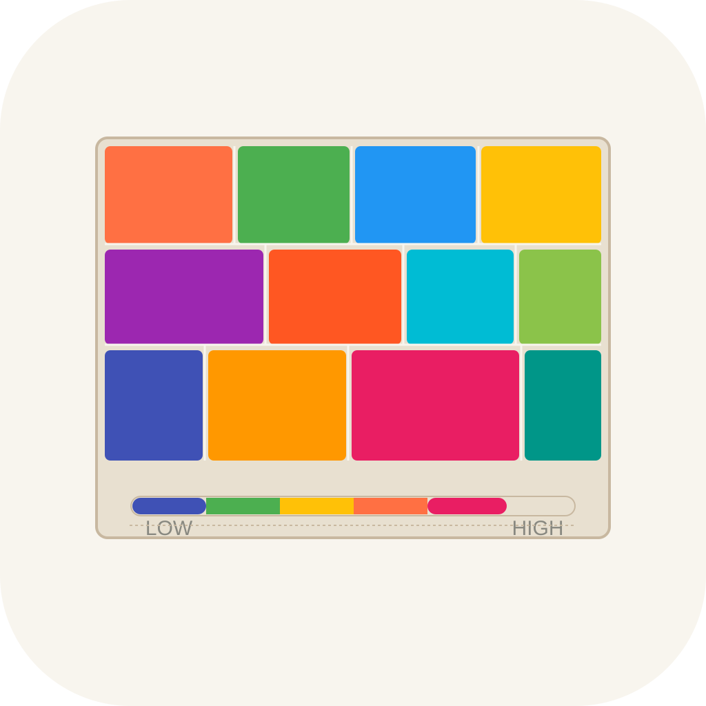
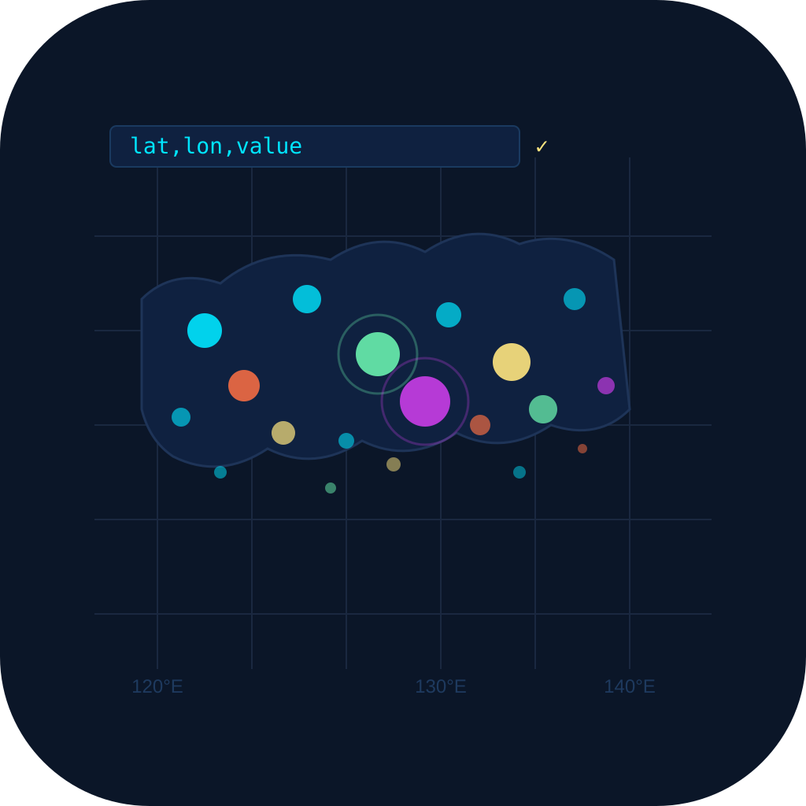
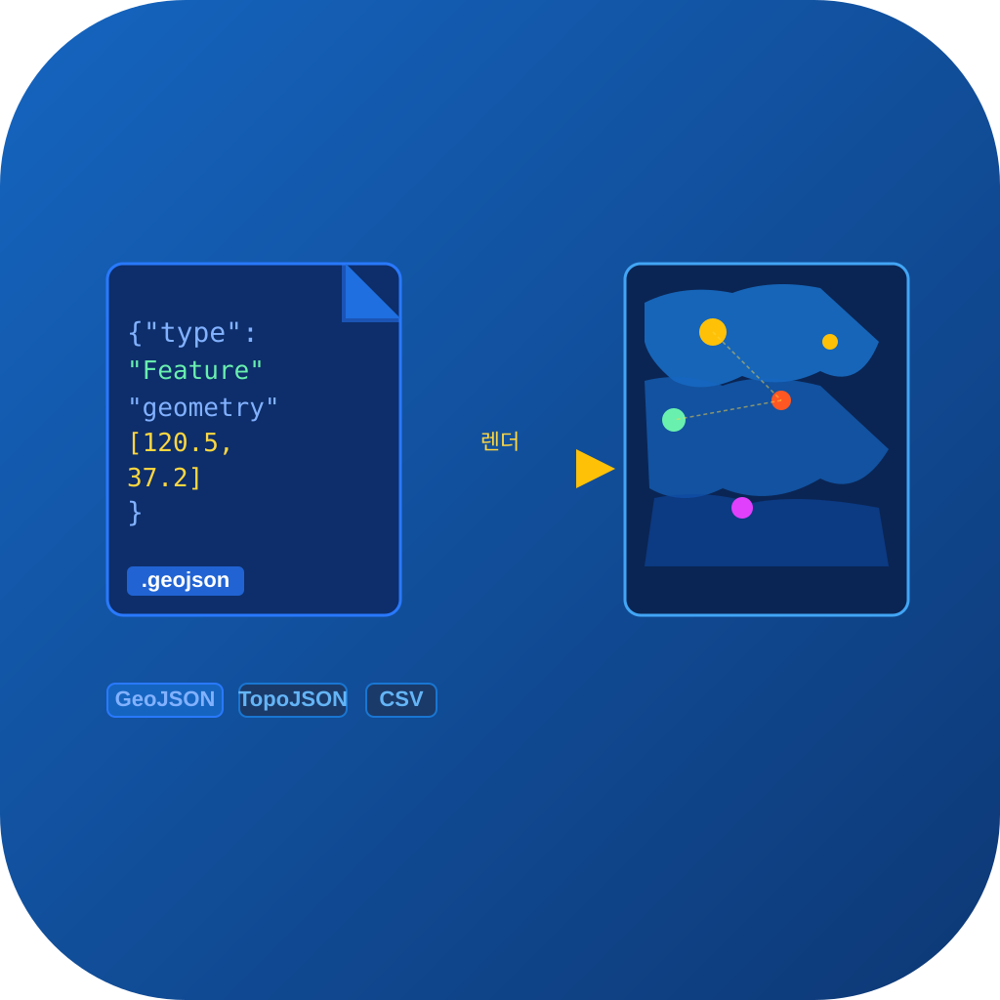
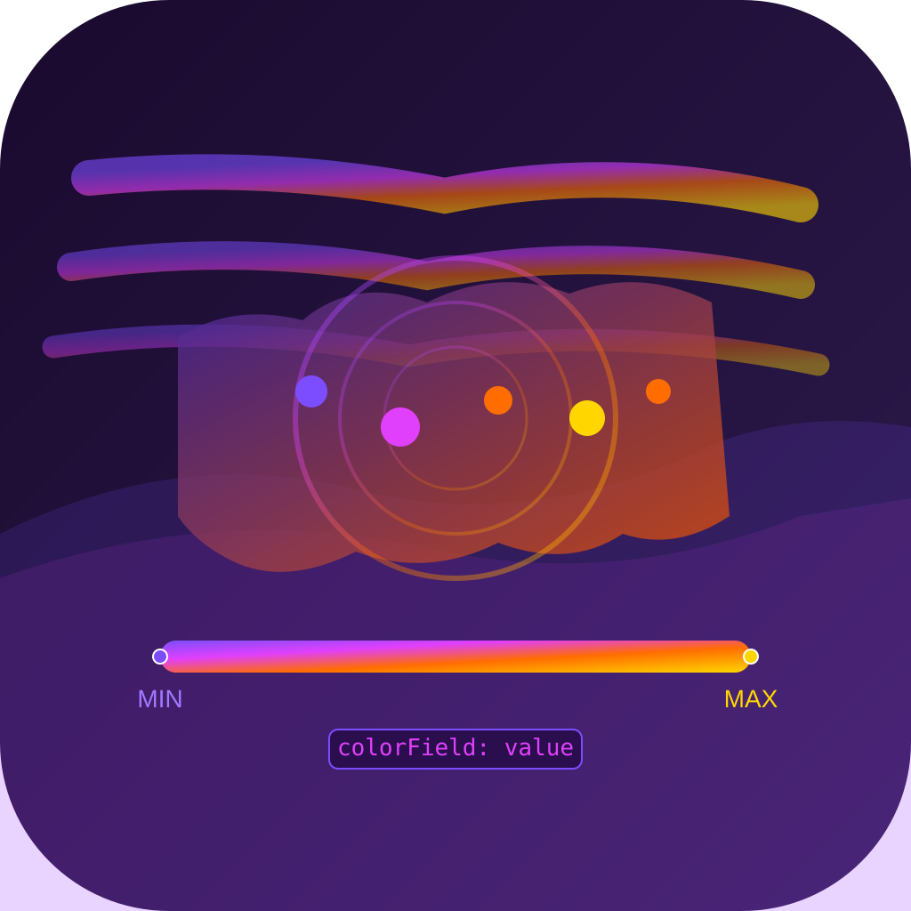
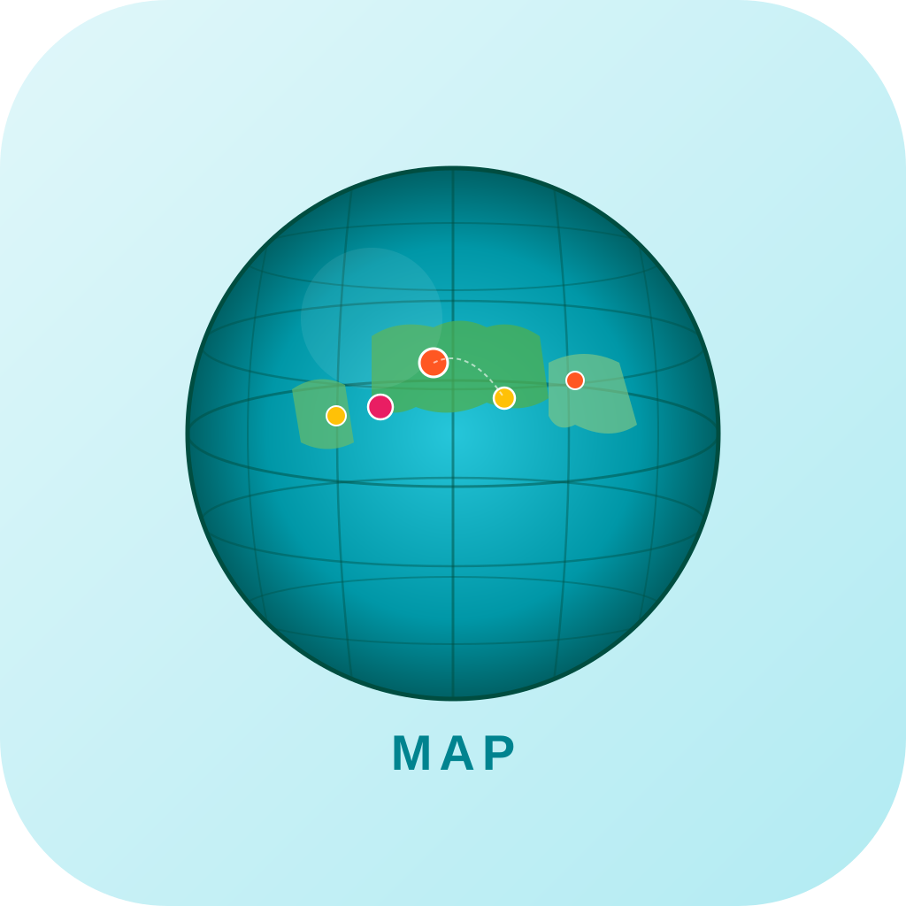
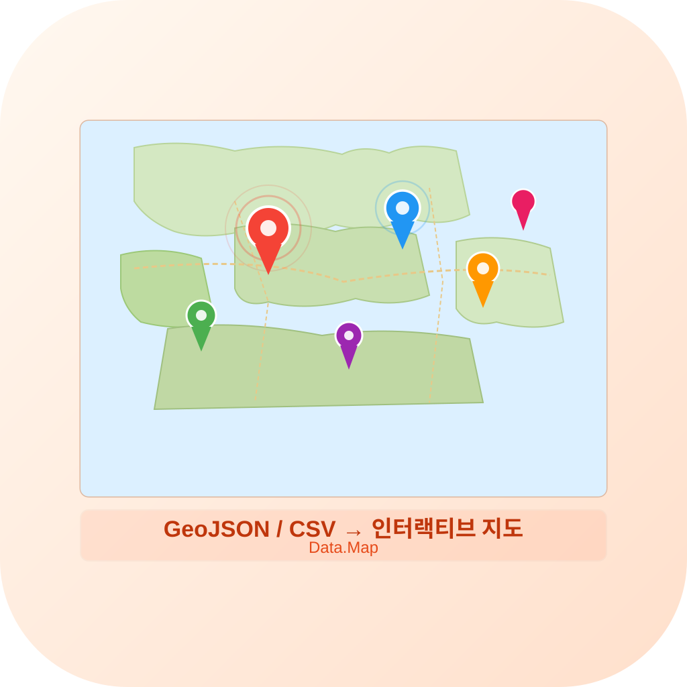
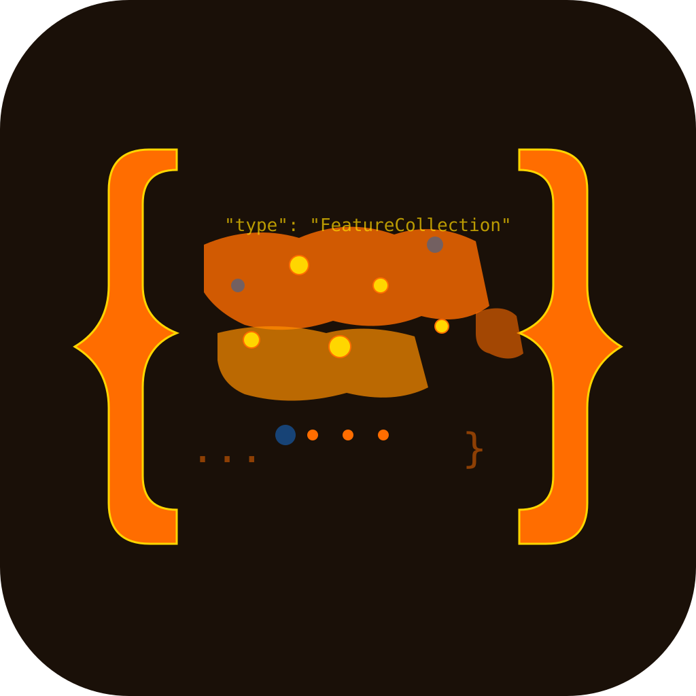
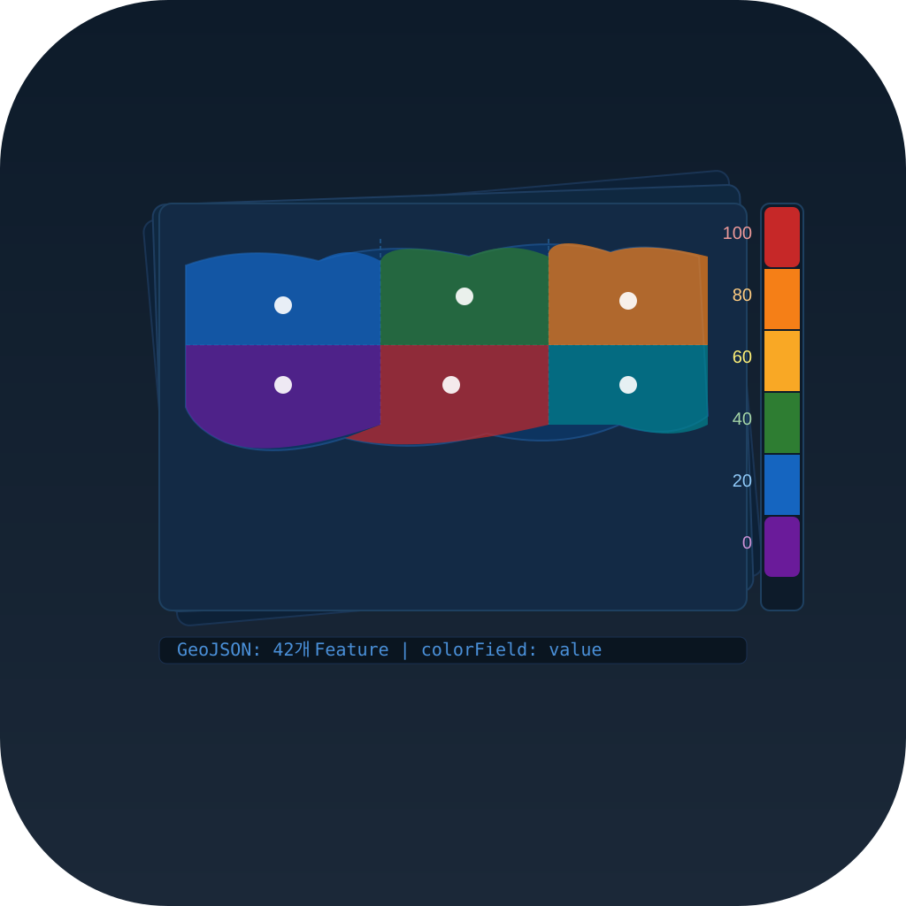
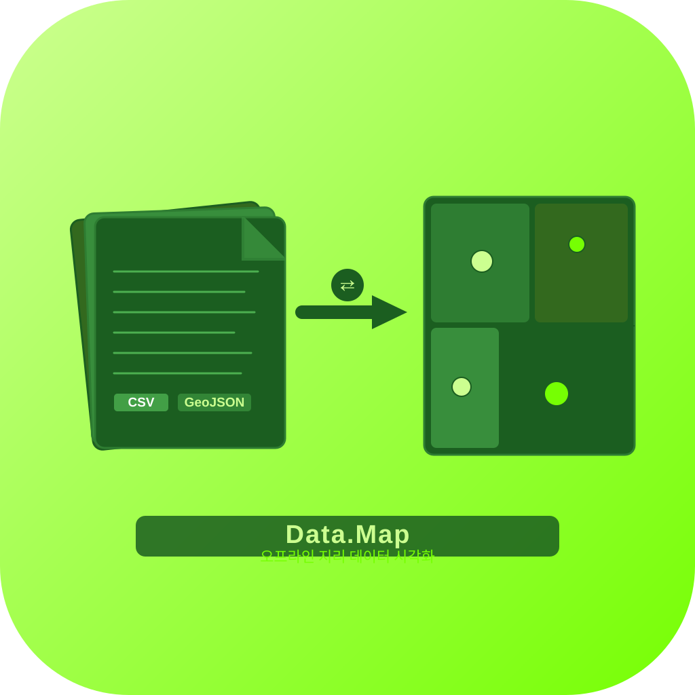
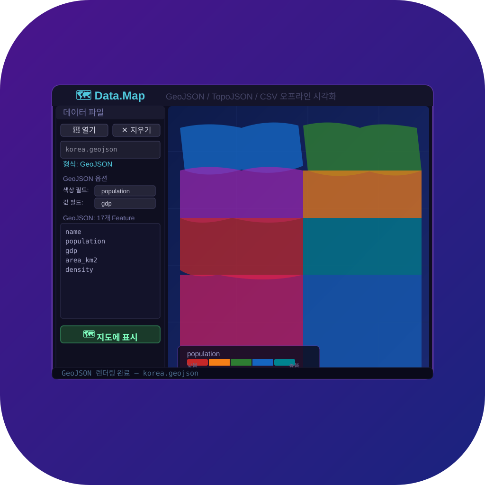

Candidate_20260321_1825 · GeoJSON / TopoJSON / CSV 오프라인 지도 시각화 앱 · 10 variants

icon_01
LITERAL
Choropleth 색상 지도
다채로운 지역 구역 + 범례 바
중앙 심볼

icon_02
LITERAL
CSV 점 데이터 → 지도
위경도 그리드 + 형광 포인트
공간/장면

icon_03
LITERAL
GeoJSON 파일 → 지도 변환
파일 아이콘 + 화살표 + 지도
레이어드

icon_04
METAPHOR
색상이 지도를 물들이는
그라데이션 범례 흐름
대각선/동적

icon_05
METAPHOR
지구본 위의 데이터 격자
위경도선 + 대륙 + 마커
기하학 추상

icon_06
METAPHOR
지도 위에 핀들이 피어나는
다색 위치 마커들
공간/장면

icon_07
METAPHOR
JSON 중괄호 안의 지도
{"type":"FeatureCollection"}
실루엣/캐릭터

icon_08
HYBRID
색상 범례 바 + Choropleth 지도
레이어드 카드 구조
레이어드

icon_09
HYBRID
파일 스택 → 지도 변환
라임그린 배경 인포그래픽
대각선/동적

icon_10
HYBRID
앱 UI 미리보기
사이드패널 + Choropleth 지도
중앙 심볼
Data.Map · GeoJSON / TopoJSON / CSV 오프라인 인터랙티브 지도 시각화 · Candidate_20260321_1825